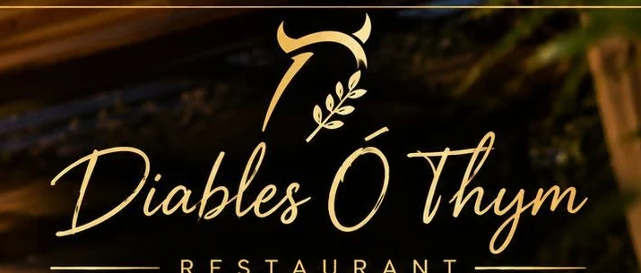
★ Maître Restaurateur depuis septembre 2024Au cœur du centre-ville du Tampon, à seulement 5 minutes de Saint-Pierre. Ici, tout est fait maison, et l'ardoise est de retour.
L'esprit de la maison
Maître Restaurateur depuis septembre 2024, Diables Ô Thym vous accueille au cœur du Tampon avec une cuisine créative à base de produits frais.
Des assiettes dressées comme des tableaux, des cuissons justes, des sauces travaillées : la carte suit le marché et l'envie du chef.
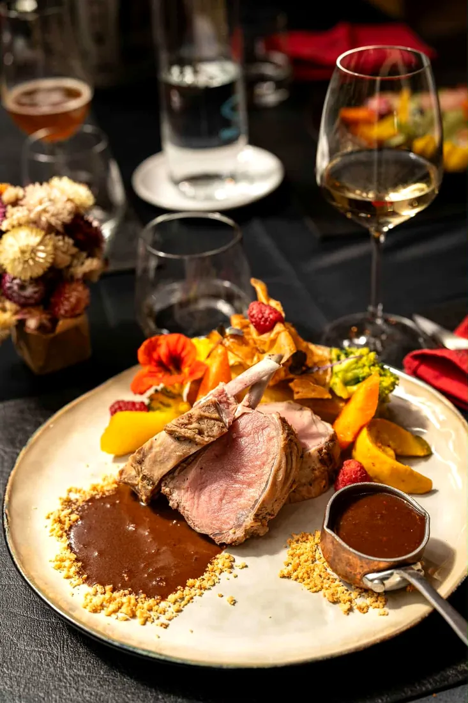
Le 31 octobre 2026
Voici quelques lignes de l'ardoise partagée sur votre page. Elle évolue avec les arrivages : le plus simple, c'est de venir la découvrir sur place.
Extrait de l'ardoise publiée le 31/10/2026 · à retrouver en salle
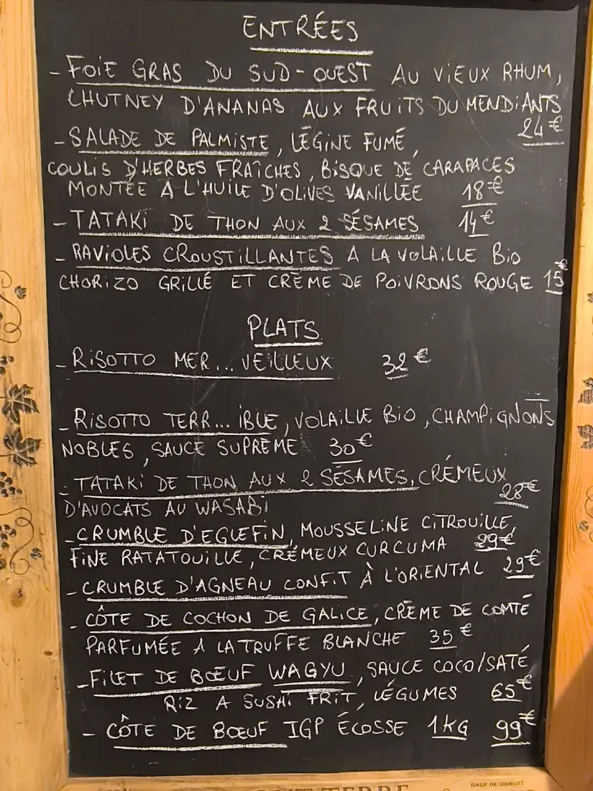
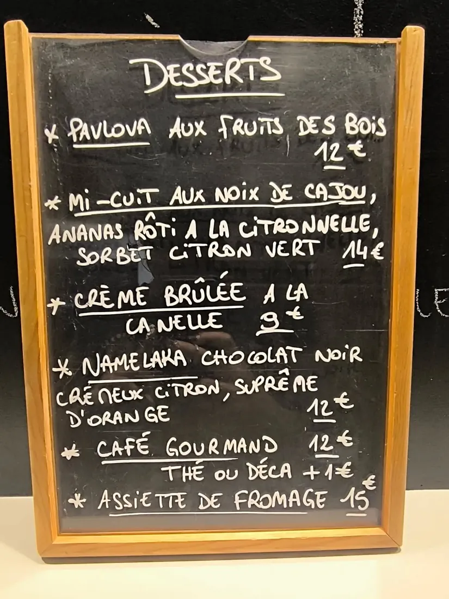
Dans l'assiette
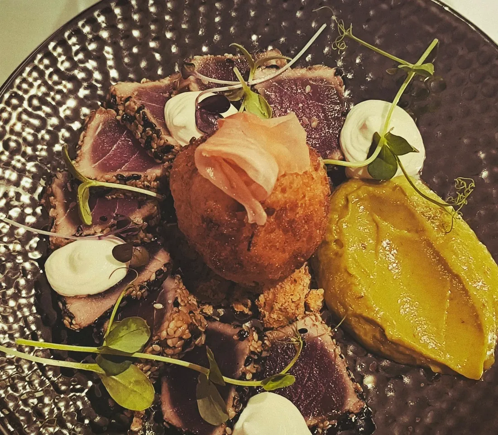
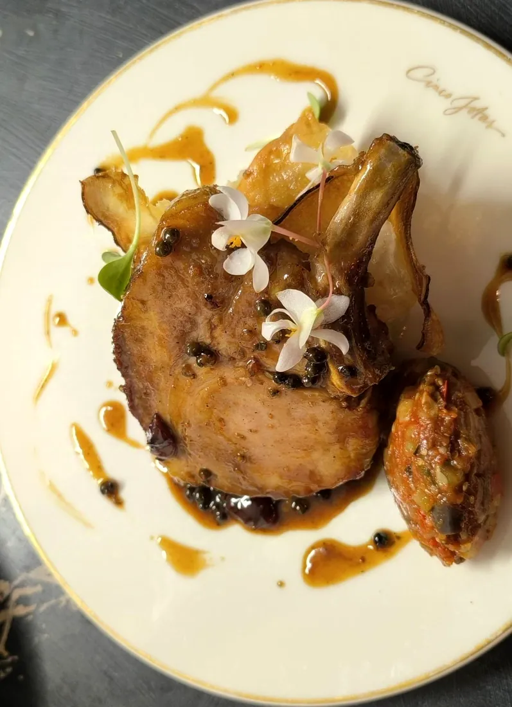
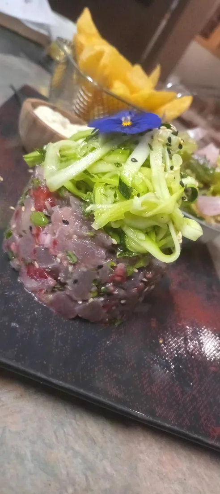
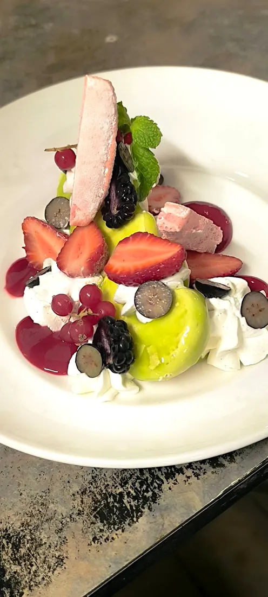
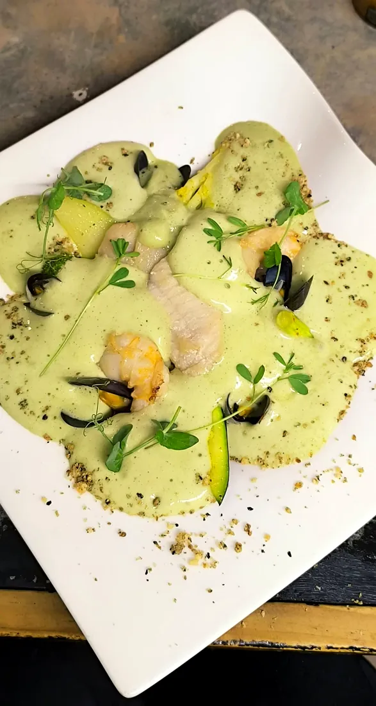
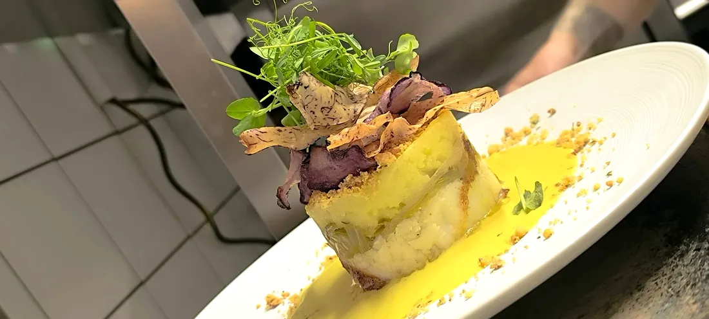
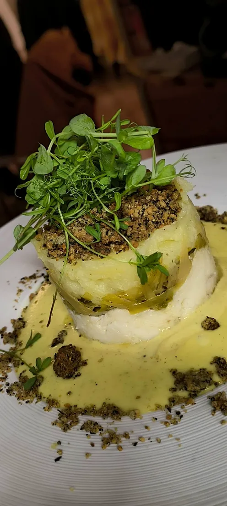
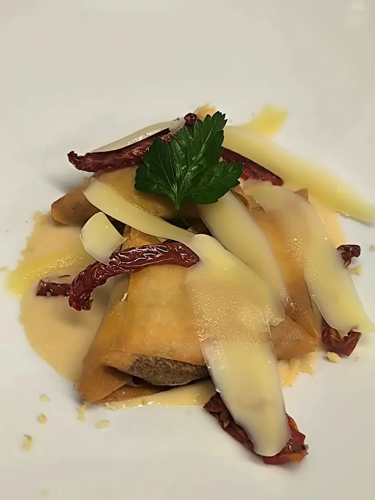
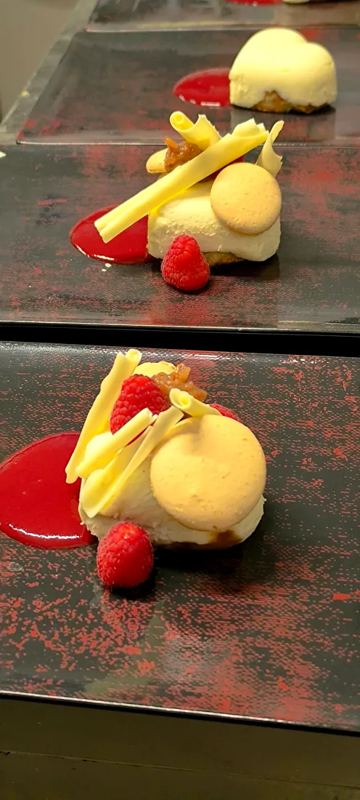
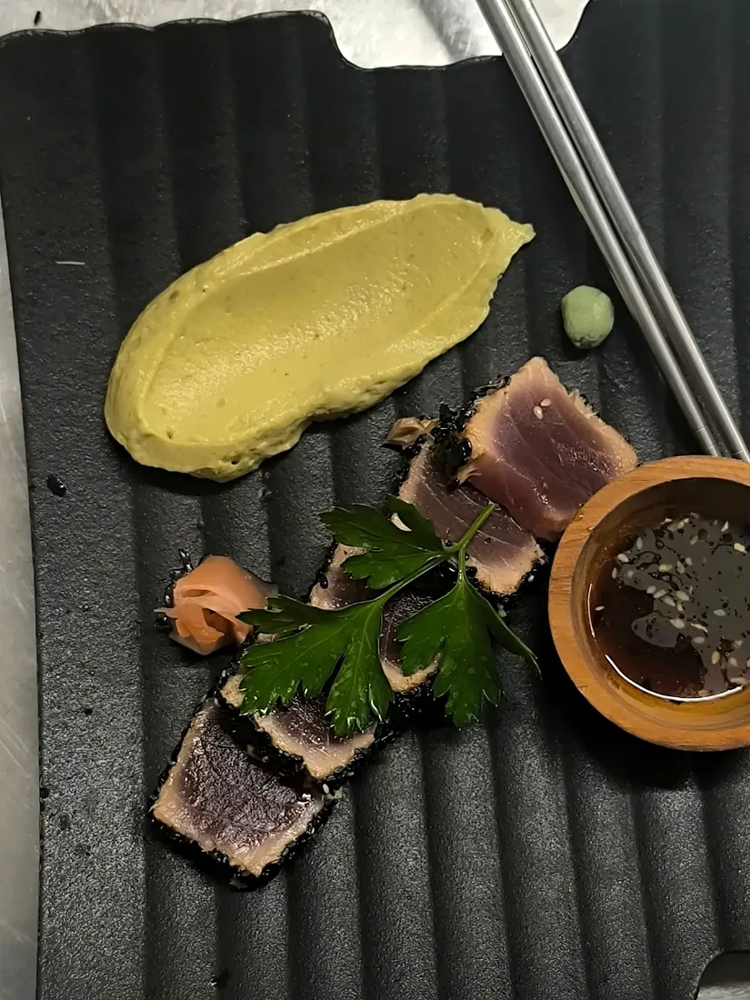
← faites glisser du doigt →
En direct de la cuisine
Publication du 7 novembre 2026
« Ça sent la pâte de pistache dans tout le restaurant… Et oui, ici tout est fait maison et avec amour ! »
#micuit #cuisinecreative #cuisinemaison
Publication du 29 octobre 2026
« Alerte arrivage d'exception d'Écosse »
De beaux produits qui arrivent en cuisine, comme la côte de bœuf IGP Écosse de l'ardoise.
Ils en parlent
« La cuisson des viandes est parfaite… le cuisinier est un artiste, sans aucun doute. J'ai adoré le tataki de magret de canard. »
Sylvio T., avis Google, 2026« Diable Ô Thym est un véritable coup de cœur ! Nous y allons régulièrement et à chaque visite, tout est parfait. L'accueil est chaleureux et convivial. »
Yaëlle, avis Google, 2025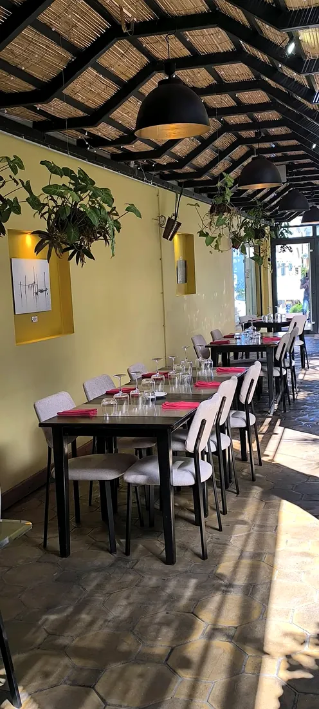
Le lieu
Murs dorés, plafond de rotin, plantes suspendues : une salle lumineuse au 186 rue Hubert Delisle.
Offrir pour Noël
Un repas à deux, une table en famille, un déjeuner entre collègues : à Noël, offrez une belle assiette faite maison au cœur du Tampon.
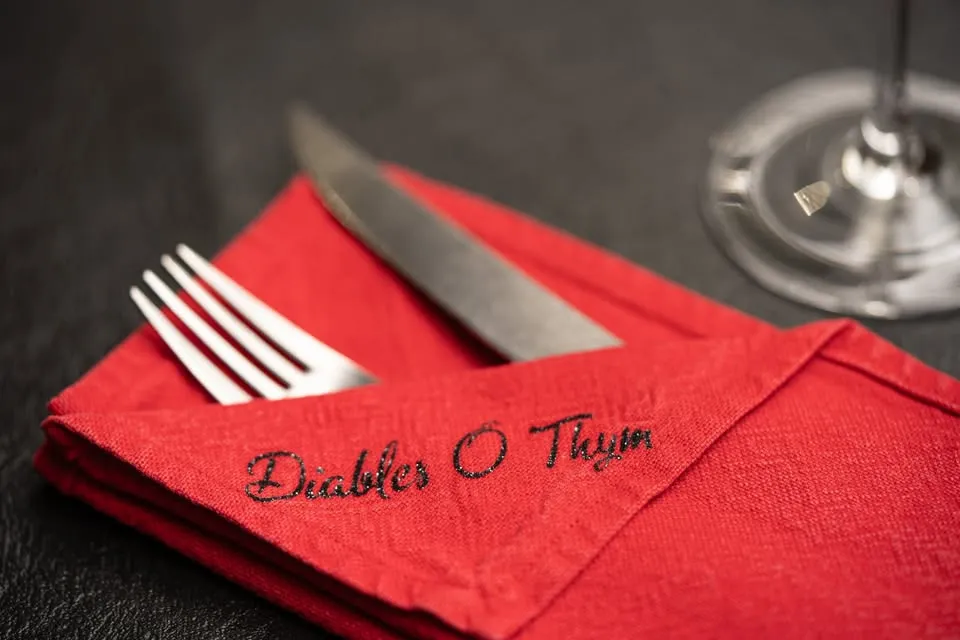
Nous trouver
Du mardi au samedi midi,
et les jeudi, vendredi et samedi soir.
facebook.com/diablesothym
Plus de 5 000 abonnés